| Sector |
Description |
Employment Percentage |
| Education |
Education sector accounts for about 20% of employment. |
20.00 |
| Retail and Distribution |
Retail and distribution services employing 19%. |
19.00 |
| Health and Welfare |
Health and welfare services account for 16%. |
16.00 |
| Hospitality, Tourism, and Leisure |
Hospitality, tourism, and leisure account for 10%. |
10.00 |
| Professional and Technical Services |
Professional and technical services account for 6%. |
6.00 |
| Tourism |
Tourism is Tourism is a significant sector in Reims, driven by its rich history, architecture, and status as a UNESCO World
Heritage site. Attractions include its cathedral, palaces, and proximity to the Champagne wine region.
|
15.00 |
| Manafacturing |
Manufacturing in Reims includes a variety of sectors, but is notably anchored by the Champagne production. Other areas include
machinery, automotive parts, and food processing.
|
20.00 |
| Retail |
The retail sector in Reims benefits from both local residents and tourists. It includes a mix of shopping centers, boutique
shops, and markets that cater to a wide range of needs and preferences.
|
10.00 |
| Wine Industry |
City’s economy is driven by the wine industry. |
NULL |
| Name |
Type |
Location |
Description |
Image |
| Canterbury Cathedral |
Historical |
51.2798,1.0828 |
A historical cathedral in Canterbury. |
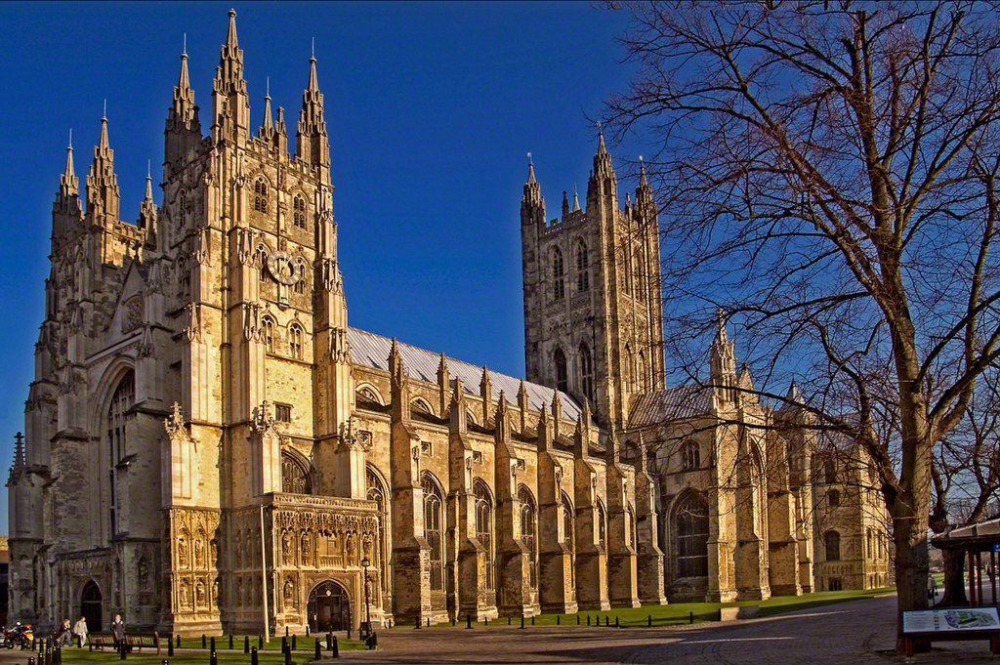 |
| Abbey of St Augustine |
Religious Site |
51.2815,1.0965 |
Historical abbey in Canterbury. |
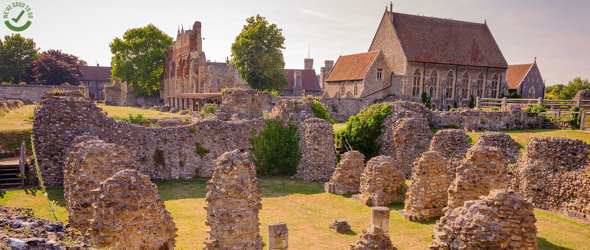 |
| Maison Ruinart |
Wine Production |
49.2475,4.0567 |
Founded in 1729, Maison Ruinart is the oldest established Champagne house, offering visitors tours of its cellars and tastings
of its prestigious champagne.
|
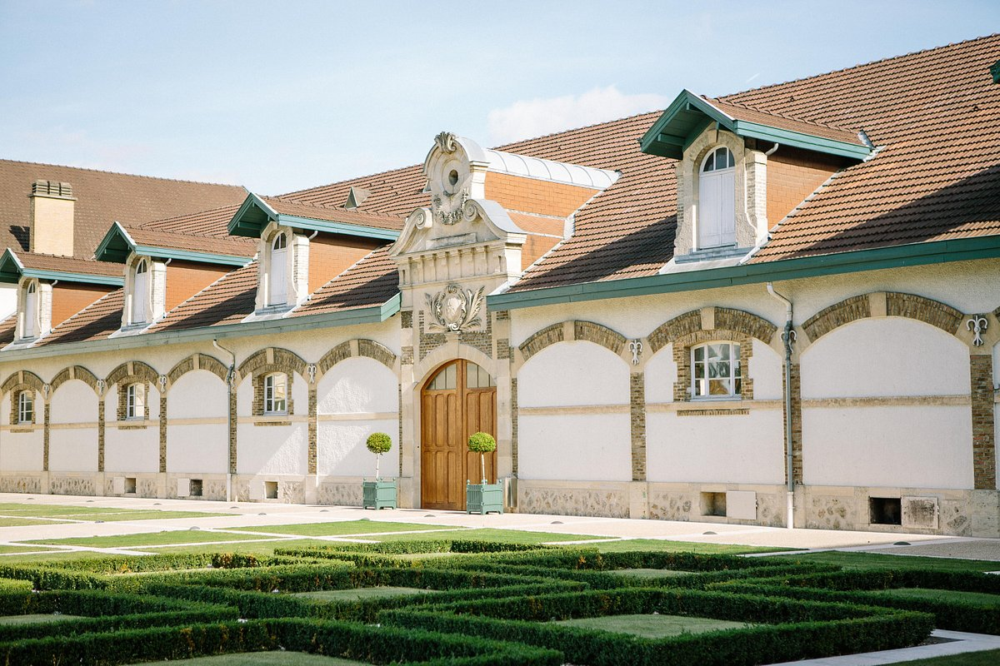 |
| Reims Cathedral |
Religious Site |
49.2530,4.0341 |
A famous cathedral in Reims. |
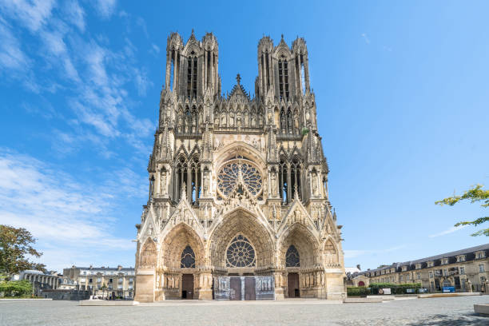 |
| St. Martin's Church |
Historical |
51.2794,1.0821 |
The oldest church in continuous use in the English-speaking world. |
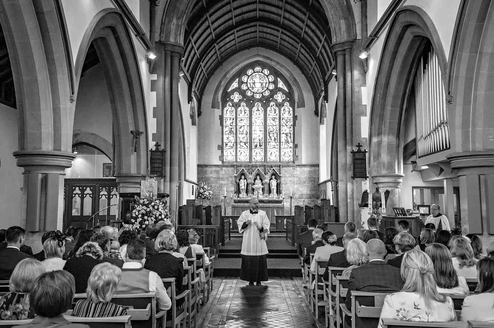 |
| Canterbury Roman Museum |
Museum |
51.2806,1.0785 |
Offers a glimpse into the city's Roman past. |
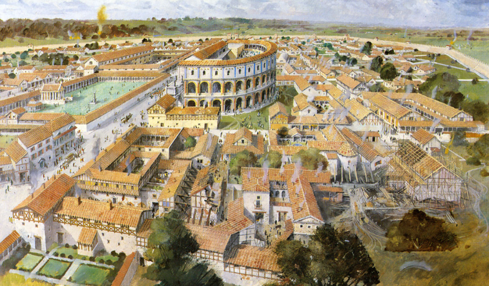 |
| Westgate Gardens |
Nature |
51.2825,1.0784 |
Beautiful historic gardens along the River Stour. |
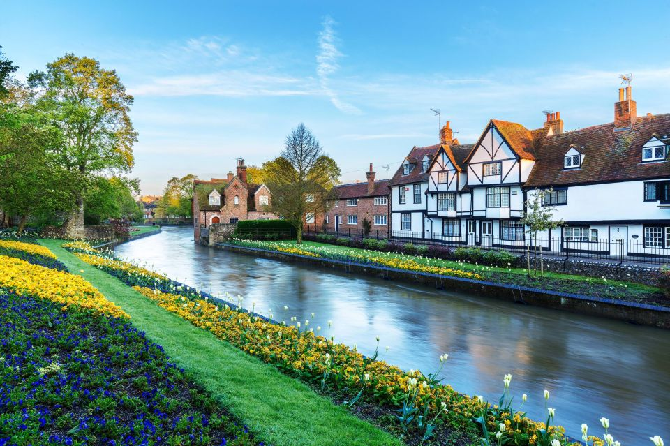 |
| The Beaney House of Art & Knowledge |
Cultural |
51.2787,1.0804 |
A museum, library, and art gallery in one. |
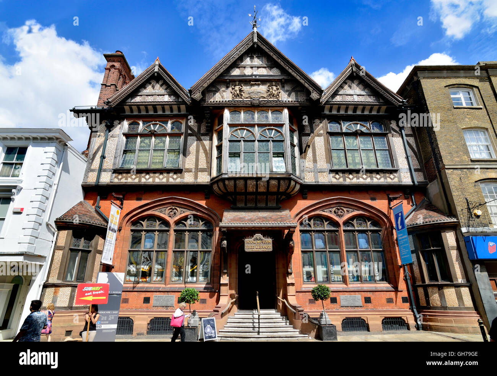 |
| Palais du Tau |
Historical |
49.2539,4.0346 |
A former palace of the Archbishop of Reims, adjacent to the Reims Cathedral. |
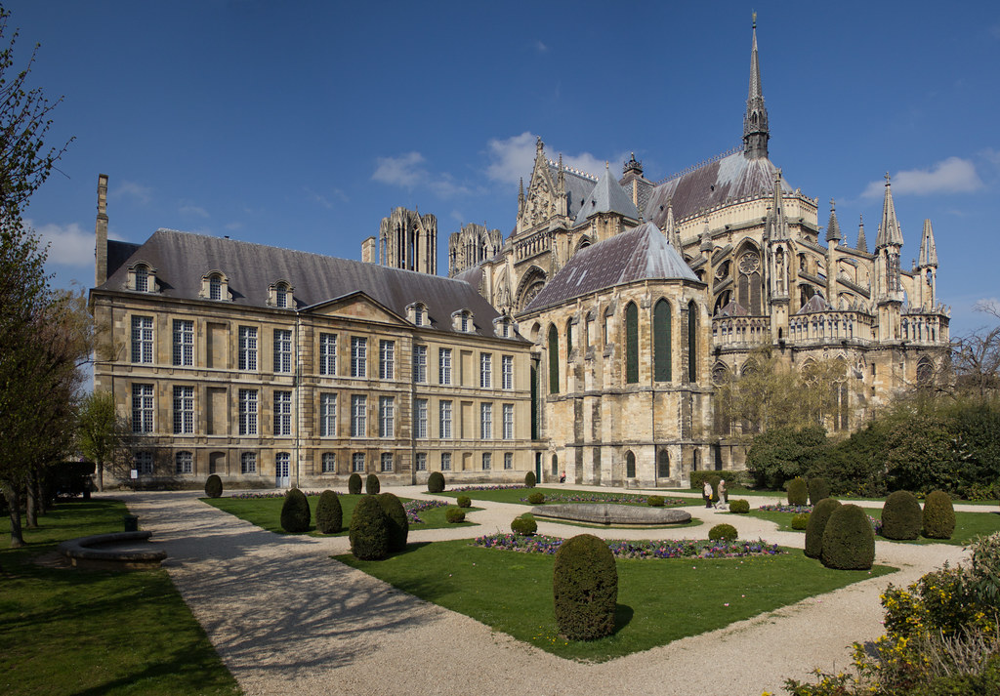 |
| Fort de la Pompelle |
Museum |
49.2006,4.1567 |
A fortification with a museum dedicated to World War I. |
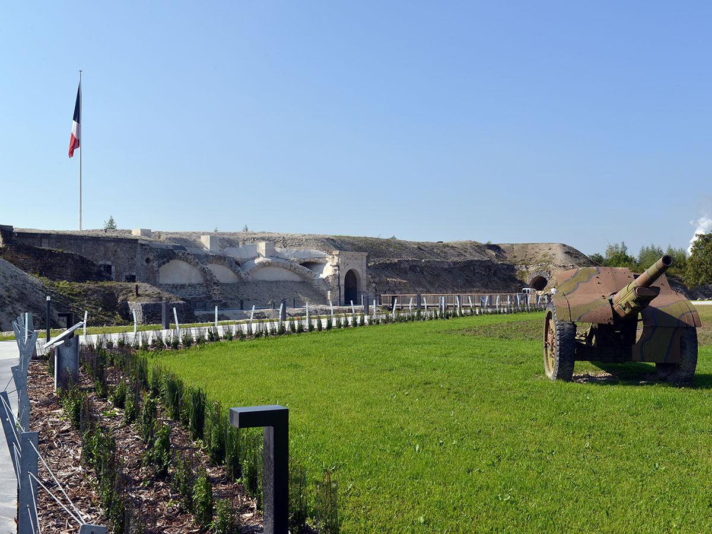 |
| Place Royale |
Historical |
49.2578,4.0317 |
A historic square with a statue of Louis XV. |
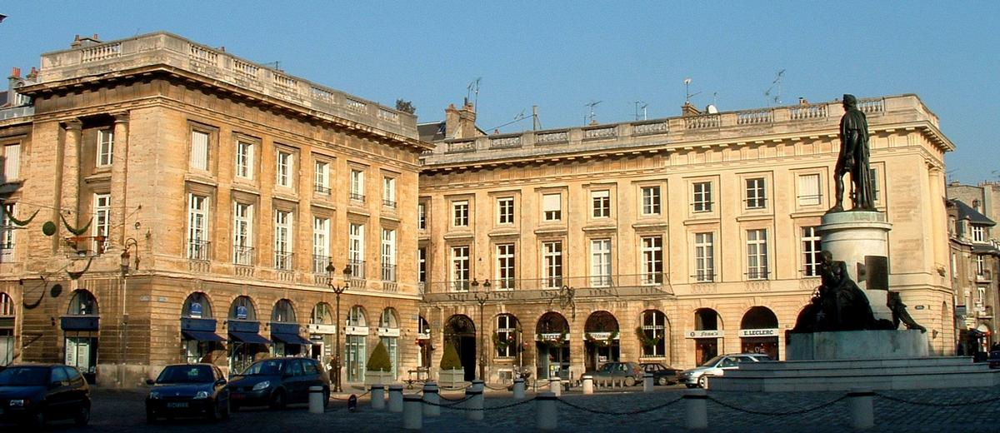 |
| Parc de Champagne |
Nature |
49.2432,4.0517 |
A vast park ideal for walks and picnics, hosting events and festivals. |
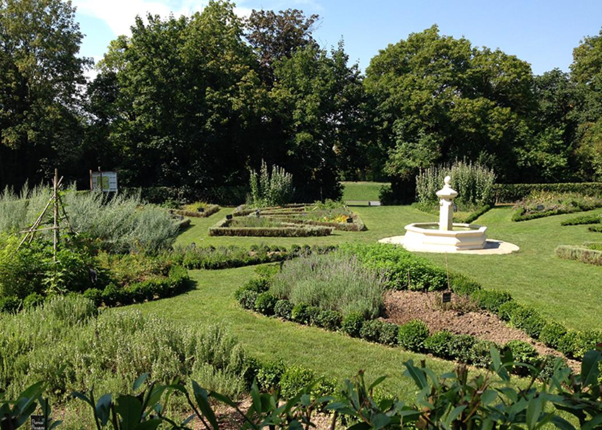 |